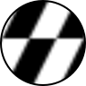

<!DOCTYPE html>
<html lang="fr">
  <head>
    <meta charset="UTF-8" />
    <meta
      name="viewport"
      content="width=device-width, initial-scale=1.0, maximum-scale=1.0, user-scalable=no"
    />
    <title>Classefinder | Lycée Lachenal</title>
    <link href="libs/leaflet-locatecontrol/L.Control.Locate.min.css" rel="stylesheet"> 
    <link rel="stylesheet" href="libs/leaflet/leaflet.css" />
    <script src="libs/leaflet/leaflet.js"></script>
    <link rel="stylesheet" href="libs/maplibre-gl/maplibre-gl.css"/>
    <script src="https://unpkg.com/maplibre-gl@3.6.1/dist/maplibre-gl.js"></script>
    <script src="https://cdn.jsdelivr.net/npm/@maplibre/maplibre-gl-leaflet@0.0.22/leaflet-maplibre-gl.js"></script>
    <link rel="stylesheet" href="https://unpkg.com/leaflet-search@4.0.0/dist/leaflet-search.min.css"/>
    <link rel="stylesheet" href="LyceeLachenal.css" />
    <script src="https://unpkg.com/leaflet-search@4.0.0/dist/leaflet-search.min.js"></script>
    <script src="https://cdnjs.cloudflare.com/ajax/libs/leaflet-routing-machine/3.2.12/leaflet-routing-machine.min.js"></script>
    <script src="https://cdn.jsdelivr.net/npm/leaflet-control-geocoder@3.1.0/dist/Control.Geocoder.min.js"></script>
    <script src="https://cdn.jsdelivr.net/npm/leaflet-polylinedecorator@1.6.0/dist/leaflet.polylineDecorator.js"></script>
    <script src="https://cdn.jsdelivr.net/npm/leaflet.locatecontrol@0.83.1/dist/L.Control.Locate.min.js"></script>
    <link href="https://cdn.jsdelivr.net/npm/leaflet-notifications@1.0.7/css/leaflet-notifications.min.css" rel="stylesheet">
    <script src="https://cdn.jsdelivr.net/npm/leaflet-notifications@1.0.7/js/leaflet-notifications.min.js"></script>
   
  </head>
  <body>
    <div id="map"></div>
    <button id="dark-mode-toggle"></button>

    <script>
      // Coordonnées du lycée (centre du plan)
      const lyceeCoords = [45.9368, 6.1322];
      const proximityThreshold = 1000; // Distance en kilomètres (500m)

      // Fonction pour calculer la distance entre deux coordonnées
      function calculateDistance(lat1, lon1, lat2, lon2) {
        const toRad = x => (x * Math.PI) / 180;
        const R = 6371; // Rayon de la Terre en kilomètres

        const dLat = toRad(lat2 - lat1);
        const dLon = toRad(lon1 - lon2);
        const a =
          Math.sin(dLat / 2) * Math.sin(dLat / 2) +
          Math.cos(toRad(lat1)) * Math.cos(toRad(lat2)) * Math.sin(dLon / 2) * Math.sin(dLon / 2);

        const c = 2 * Math.atan2(Math.sqrt(a), Math.sqrt(1 - a));
        return R * c; // Distance en kilomètres
      }

      // Initialiser la carte avec un fond OSM
      function initializeBaseMap() {
        const map = L.map('map', {
          center: lyceeCoords,
          zoomDelta: 0.25,
          zoomSnap: 0,
          zoom: 16,
        });

        // Ajouter un fond de carte OSM
        L.tileLayer('https://{s}.tile.openstreetmap.org/{z}/{x}/{y}.png', {
          attribution: '&copy; <a href="https://www.openstreetmap.org/copyright">OpenStreetMap</a> contributors'
        }).addTo(map);

        return map;
      }

      // Gérer la géolocalisation
      function handleGeolocation(map) {
        console.log("Démarrage de handleGeolocation");
        const locateControl = L.control.locate({
          position: "topright",
          setView: true,
          drawCircle: true,
          drawMarker: false, // On désactive le marqueur par défaut
          showPopup: false,
          watch: true, // Ajouté pour suivre la position en continu
          strings: {
            title: "Ma position",
            popup: "Vous êtes ici",
            outsideMapBoundsMsg: "Vous êtes hors de la zone requise"
          },
          onLocationError: (err) => {
            console.error("Erreur de localisation:", err);
            showProximityCircle(map);
          },
          onLocationFound: (e) => {
            console.log("Position trouvée:", e);
            const distance = calculateDistance(
              e.latlng.lat, e.latlng.lng, lyceeCoords[0], lyceeCoords[1]
            );


            console.log("Distance jusqu'au lycée:", distance, "km");

            if (distance <= proximityThreshold) {
              console.log("Dans la zone - Initialisation de la carte du lycée");
              
              // Supprimer uniquement la couche OSM de base
              map.eachLayer(layer => {
                if (layer instanceof L.TileLayer) {
                  map.removeLayer(layer);
                }
              });

              // Appel direct à initializeSchoolMap
              console.log("Appel de initializeSchoolMap");
              const success = initializeSchoolMap(map, null, [e.latitude, e.longitude]);
              if (success) {
                console.log("Carte du lycée initialisée avec succès");
              } else {
                console.error("Échec de l'initialisation de la carte du lycée");
                showProximityCircle(map);
              }
            } else {
              console.log("Hors de la zone - Affichage du cercle de proximité");
              showProximityCircle(map);
            }
          }
        }).addTo(map);

        console.log("Démarrage de la localisation");
        locateControl.start();
      }

      // Afficher le cercle de proximité
      function showProximityCircle(map) {
        const proximityCircle = L.circle(lyceeCoords, {
          radius: proximityThreshold * 1000, // Convertir les kilomètres en mètres pour le cercle
          color: 'red',
          fillOpacity: 0.15
        }).addTo(map);

        // Ajouter un ID au cercle
        proximityCircle._path.id = 'nohover';
      }

      // Initialiser la carte du lycée (avec les fonctionnalités spécifiques)
      function initializeSchoolMap(map, userMarker, userCoords) {
        if (!map || !map.getCenter()) { // Vérification que la carte est prête
    console.error("La carte n'est pas initialisée correctement");
    return false;
  }
        try {
          console.log("Début de initializeSchoolMap");
          // --- 1. Initialisation des limites ---
          var sudOuest = L.latLng(45.93818505744445, 6.134245788738398);
          var nordEst = L.latLng(45.93640970079779, 6.13115811037474);
          var limites = L.latLngBounds(sudOuest, nordEst);

          // --- 2. Création de la carte ---
          map.setView(lyceeCoords, 18);
          //map.setMaxBounds(limites);

          // Créez uniquement une fois les trois panes, dans l'ordre souhaité :
          map.createPane("routePane");
          map.getPane("routePane").style.zIndex = 600; // Pane pour les itinéraires

          map.createPane("arrowPane");
          map.getPane("arrowPane").style.zIndex = 650; // Pane pour les flèches

          map.createPane("markerPane");
          map.getPane("markerPane").style.zIndex = 700; // Pane for markers

          // Assurez-vous que le pane "arrowPane" est le dernier enfant dans le conteneur
          map.getPane("arrowPane").parentNode.appendChild(map.getPane("arrowPane"));

          // --- 3. Tuiles vectorielles MapTiler ---
          // Calque clair
          var lightMap = L.maplibreGL({
            style:
              "https://api.maptiler.com/maps/3b544fc3-420c-4a93-a594-a99b71d941bb/style.json?key=BiyHHi8FTQZ233ADqskZ",
            attribution:
              '&copy; <a href="https://www.maptiler.com/copyright/" target="_blank">MapTiler</a> contributors',
          });

          // Calque sombre
          var darkMap = L.maplibreGL({
            style:
              "https://api.maptiler.com/maps/04c03a5d-804b-4c6f-9736-b7103fdb530b/style.json?key=BiyHHi8FTQZ233ADqskZ",
            attribution:
              '&copy; <a href="https://www.maptiler.com/copyright/" target="_blank">MapTiler</a> contributors',
          });

          // --- 4. Ajout du fond clair par défaut ---
          lightMap.addTo(map);

          // --- 5. Ajout des autres fonctionnalités ---
          // --- 2. Données GeoJSON pour les salles et les chemins ---
      var salleEtage0 = {
          "type": "FeatureCollection",
          "features": [
          { "type": "Feature", "properties": { "name": "13" }, "geometry": { "type": "MultiPolygon", "coordinates": [ [ [ [ 6.132443855592967, 45.936792791783532 ], [ 6.132451800410498, 45.936862076107261 ], [ 6.132332645198166, 45.936867696926917 ], [ 6.132323764318674, 45.936798784599809 ], [ 6.132443855592967, 45.936792791783532 ] ] ] ] } },
          { "type": "Feature", "properties": { "name": "14" }, "geometry": { "type": "MultiPolygon", "coordinates": [ [ [ [ 6.132323764318674, 45.93679878003244 ], [ 6.132332645193752, 45.936867696937178 ], [ 6.132169440848435, 45.936875476859768 ], [ 6.132160492656691, 45.936806544549889 ], [ 6.132323764318674, 45.93679878003244 ] ] ] ] } },
         ]
      };

      var salleEtage1 = {
          "type": "FeatureCollection",
          "features": [
          { "type": "Feature", "properties": { "name": "115" }, "geometry": { "type": "MultiPolygon", "coordinates": [ [ [ [ 6.132443855592967, 45.936792791783532 ], [ 6.132451800410498, 45.936862076107261 ], [ 6.132332645198166, 45.936867696926917 ], [ 6.132323764318674, 45.936798784599809 ], [ 6.132443855592967, 45.936792791783532 ] ] ] ] } },
          { "type": "Feature", "properties": { "name": "117" }, "geometry": { "type": "MultiPolygon", "coordinates": [ [ [ [ 6.132323764318674, 45.93679878003244 ], [ 6.132332645193752, 45.936867696937178 ], [ 6.132169440848435, 45.936875476859768 ], [ 6.132160492656691, 45.936806544549889 ], [ 6.132323764318674, 45.93679878003244 ] ] ] ] } },
          ]
      };

      var salleEtage2 = {
          "type": "FeatureCollection",
  "features": [
  { "type": "Feature", "properties": { "name": "V1" }, "geometry": { "type": "MultiPolygon", "coordinates": [ [ [ [ 6.132559263481, 45.937761742137447 ], [ 6.132605358389325, 45.937758765489001 ], [ 6.132614138371865, 45.937824175393722 ], [ 6.132567165465287, 45.937827991605154 ], [ 6.132559263481, 45.937761742137447 ] ] ] ] } },
  { "type": "Feature", "properties": { "name": "V2" }, "geometry": { "type": "MultiPolygon", "coordinates": [ [ [ [ 6.132607553384967, 45.937773801378285 ], [ 6.132725973399444, 45.93776700851511 ], [ 6.132730253640932, 45.937817306212494 ], [ 6.132614138371868, 45.937824175393722 ], [ 6.132607553384967, 45.937773801378285 ] ] ] ] } },
  ]
      };

      var CheminEtage0 = {
          "type": "FeatureCollection",
  "features":[
          {"type":"Feature","properties":{"name":"14","foot":"yes","highway":"footway"},"geometry":{"type":"LineString","coordinates":[[6.13229,45.93681],[6.13228,45.93679]]}},
          {"type":"Feature","properties":{"name":"13","foot":"yes","highway":"footway"},"geometry":{"type":"LineString","coordinates":[[6.13242,45.9368],[6.13242,45.93678]]}},
        ]
      };

      var CheminEtage1 = {
        "type": "FeatureCollection",
        "features":[
          {"type":"Feature","properties":{"highway":"footway","foot":"yes","name":"115"},"geometry":{"type":"LineString","coordinates":[[6.1322,45.93681],[6.1322,45.9368]]}},
          {"type":"Feature","properties":{"highway":"footway","foot":"yes","name":"117"},"geometry":{"type":"LineString","coordinates":[[6.13242,45.93678],[6.13242,45.9368]]}},

        ]
      };

      var CheminEtage2 = {
        "type": "FeatureCollection",
          "features":[
  {"type":"Feature","properties":{"foot":"yes","name":"V1","highway":"footway","layer":"-2","tunnel":"yes"},"geometry":{"type":"LineString","coordinates":[[6.13259,45.93777],[6.13262,45.93777]]}},
  {"type":"Feature","properties":{"foot":"yes","name":"V2","highway":"footway","layer":"-2","tunnel":"yes"},"geometry":{"type":"LineString","coordinates":[[6.13272,45.9378],[6.13268,45.93775]]}},
  ]};

  // Fonction pour basculer entre les thèmes
  function toggleTheme() {
      document.body.classList.toggle('dark-mode');
      const toggleButton = document.getElementById('dark-mode-toggle');
      
      // Vérifier si le mode sombre est activé
      if (document.body.classList.contains('dark-mode')) {
          map.removeLayer(lightMap);
          map.addLayer(darkMap);
          
          // Changer l'icône à partir de l'image dans le dossier ./images
          toggleButton.innerHTML = ''; // Remplacez par votre icône de soleil
      } else {
          map.removeLayer(darkMap);
          map.addLayer(lightMap);
          
          // Changer l'icône à partir de l'image dans le dossier ./images
          toggleButton.innerHTML = ''; // Remplacez par votre icône de lune
      }
  }


        // Détecter le thème préféré de l'utilisateur
        const prefersDarkScheme = window.matchMedia("(prefers-color-scheme: dark)");

        if (prefersDarkScheme.matches) {
            document.body.classList.add('dark-mode');
            const toggleButton = document.getElementById('dark-mode-toggle');
            toggleButton.innerHTML = ''; // Icône du soleil
            map.removeLayer(lightMap);
            map.addLayer(darkMap);
        } else {
            document.body.classList.remove('dark-mode');
            const toggleButton = document.getElementById('dark-mode-toggle');
            toggleButton.innerHTML = ''; // Icône de la lune
            map.removeLayer(darkMap);
            map.addLayer(lightMap);
        }


        // Ajouter l'événement de clic pour le bouton de basculement
        document.getElementById('dark-mode-toggle').addEventListener('click', toggleTheme);

        var notification= L.control.notifications({
            timeout:  10000,
            position:  "bottomleft",
            closable: true,
            dismissable: true,
            className: 'pastel',
        }).addTo(map);

        // --- 3. Création des couches GeoJSON pour les salles ---
        // On n'utilise plus bindTooltip ici afin d'éviter que le label s'affiche automatiquement au survol.
        function onEachSalleFeature(feature, layer, floor) {
          feature.properties.floor = floor;
          // Pour l'étage 1, si la propriété "name" est absente, on la copie depuis "salle"
          if (
            floor === "1" &&
            !feature.properties.name &&
            feature.properties.salle
          ) {
            feature.properties.name = feature.properties.salle;
          }
          layer.on({
            mouseover: function (e) {
              e.target.setStyle({
                fillOpacity: 1,
                weight: 3,
              });
            },
            mouseout: function (e) {
              if (floor === "0") {
                salleLayer0.resetStyle(e.target);
              } else if (floor === "1") {
                salleLayer1.resetStyle(e.target);
              } else if (floor === "2") {
                salleLayer2.resetStyle(e.target);
              }
            },
            click: function (e) {
              // Supprimer l'appel à resetHighlight() pour conserver les labels
              // Zoom sur la feature cliquée
              map.fitBounds(e.target.getBounds());
            },
          });
        }

        var salleLayer0 = L.geoJSON(salleEtage0, {
          style: function (feature) {
            return { color: "#146414", weight: 2, fillOpacity: 0.9, className: 'no-hover' };
          },
          onEachFeature: function (feature, layer) {
            onEachSalleFeature(feature, layer, "0");
          },
        });

        var salleLayer1 = L.geoJSON(salleEtage1, {
          style: function (feature) {
            return { color: "#2B942B", weight: 2, fillOpacity: 0.9, className: 'no-hover' };
          },
          onEachFeature: function (feature, layer) {
            onEachSalleFeature(feature, layer, "1");
          },
        });

        var salleLayer2 = L.geoJSON(salleEtage2, {
          style: function (feature) {
            return { color: "#093209", weight: 2, fillOpacity: 0.9, className: 'no-hover' }; // modifiez la couleur au besoin
          },
          onEachFeature: function (feature, layer) {
            onEachSalleFeature(feature, layer, "2");
          },
        });

        // --- 4. Calque des chemins ---

        var CheminEtageLayer0 = L.geoJSON(CheminEtage0, {
          style: { color: "transparent" },
        });

        var CheminEtageLayer1 = L.geoJSON(CheminEtage1, {
          style: { color: "transparent" },
        });

        var CheminEtageLayer2 = L.geoJSON(CheminEtage2, {
          style: { color: "transparent" },
        });

        // --- 5. Couches d'itinéraire (initialement vides) ---
        var itineraireEtage0 = { type: "FeatureCollection", features: [] };
        var itineraireEtage1 = { type: "FeatureCollection", features: [] };
        var itineraireEtage2 = { type: "FeatureCollection", features: [] };

        var itineraireLayer0 = L.geoJSON(itineraireEtage0, {
          style: { color: "#3564FF", weight: 10 },
        });
        var itineraireLayer1 = L.geoJSON(itineraireEtage1, {
          style: { color: "#3564FF", weight: 10 },
        });
        var itineraireLayer2 = L.geoJSON(itineraireEtage2, {
          style: { color: "#FFA500", weight: 5 },
        });

        // --- 6. Fonds de carte personnalisés pour chaque groupe (en plus du fond par défaut) ---
        var customBackground0 = L.tileLayer(
          "../Données/QGIS/QTiles/etage0/{z}/{x}/{y}.png",
          {
            opacity: 1,
            maxZoom: 23,
          }
        );
        var customBackground1 = L.tileLayer(
          "../Données/QGIS/QTiles/etage1/{z}/{x}/{y}.png",
          {
            opacity: 1,
            maxZoom: 23,
          }
        );
        var customBackground2 = L.tileLayer(
          "../Données/QGIS/QTiles/etage2/{z}/{x}/{y}.png",
          {
            opacity: 1,
            maxZoom: 23,
          }
        );

        // --- 7. Groupes par étage en ajoutant le fond personnalisé dans le groupe ---
        var etage0 = L.layerGroup([
          customBackground0,
          salleLayer0,
          itineraireLayer0,
          CheminEtageLayer0,
        ]);
        var etage1 = L.layerGroup([
          customBackground1,
          salleLayer1,
          itineraireLayer1,
          CheminEtageLayer1,
        ]);
        var etage2 = L.layerGroup([
          customBackground2,
          salleLayer2,
          itineraireLayer2,
          CheminEtageLayer2,
        ]);
        // Par défaut, le groupe de l'étage 0 est affiché.
        etage0.addTo(map);

        // --- 8. Gestion des labels (tooltips) en fonction du niveau de zoom ---
        const tooltipZoomThreshold = 20; // Seuil de zoom pour afficher les labels
        const arrowZoomThreshold = 20; // Seuil de zoom pour afficher les flèches

        const buttonZoomThreshold = window.innerWidth <= 600 ? 21 : 23;

        function updateTooltipsVisibility() {
          var currentZoom = map.getZoom();

          function toggleTooltips(layerGroup) {
            layerGroup.eachLayer(function (layer) {
              if (currentZoom >= tooltipZoomThreshold) {
                if (!layer._customTooltip) {
                  var labelContent =
                    layer.feature.properties.name ||
                    layer.feature.properties.salle;
                  if (labelContent) {
                    var center = layer.getBounds().getCenter();
                    var tooltip = L.tooltip({
                      permanent: true,
                      direction: "center",
                      className: "room-label",
                    })
                      .setContent(labelContent)
                      .setLatLng(center);
                    tooltip.addTo(map);
                    layer._customTooltip = tooltip;
                  }
                }
              } else if (layer._customTooltip) {
                map.removeLayer(layer._customTooltip);
                layer._customTooltip = null;
              }
            });
          }

          // Etage 0
          if (map.hasLayer(etage0)) {
            toggleTooltips(salleLayer0);
          } else {
            salleLayer0.eachLayer(function (layer) {
              if (layer._customTooltip) {
                map.removeLayer(layer._customTooltip);
                layer._customTooltip = null;
              }
            });
          }

          // Etage 1
          if (map.hasLayer(etage1)) {
            toggleTooltips(salleLayer1);
          } else {
            salleLayer1.eachLayer(function (layer) {
              if (layer._customTooltip) {
                map.removeLayer(layer._customTooltip);
                layer._customTooltip = null;
              }
            });
          }

          // Etage 2
          if (map.hasLayer(etage2)) {
            toggleTooltips(salleLayer2);
          } else {
            salleLayer2.eachLayer(function (layer) {
              if (layer._customTooltip) {
                map.removeLayer(layer._customTooltip);
                layer._customTooltip = null;
              }
            });
          }

          updateArrowsVisibility();
          updateButtonsVisibility();
        }

        function updateArrowsVisibility() {
          var currentZoom = map.getZoom();
        
          function toggleArrows(layerGroup) {
            var arrowLayers = [];
            layerGroup.eachLayer(function (layer) {
              if (layer instanceof L.PolylineDecorator) {
                if (currentZoom >= arrowZoomThreshold) {
                  if (!map.hasLayer(layer)) {
                    arrowLayers.push(layer);
                  }
                } else {
                  if (map.hasLayer(layer)) {
                    map.removeLayer(layer);
                  }
                }
              }
              });
            // Add arrow layers after all polylines have been added
            arrowLayers.forEach((arrow) => {
              map.addLayer(arrow);
              arrow.bringToFront(); // Ensure the arrow is on top
            });
          }
        
          if (map.hasLayer(etage0)) {
            toggleArrows(itineraireLayer0);
          } else {
            itineraireLayer0.eachLayer(function (layer) {
              if (layer instanceof L.PolylineDecorator && map.hasLayer(layer)) {
                map.removeLayer(layer);
              }
            });
          }
        
          if (map.hasLayer(etage1)) {
            toggleArrows(itineraireLayer1);
          } else {
            itineraireLayer1.eachLayer(function (layer) {
              if (layer instanceof L.PolylineDecorator && map.hasLayer(layer)) {
                map.removeLayer(layer);
              }
            });
          }
        
          if (map.hasLayer(etage2)) {
            toggleArrows(itineraireLayer2);  // Corrected variable name here
          } else {
            itineraireLayer2.eachLayer(function (layer) {  // Corrected variable name here
              if (layer instanceof L.PolylineDecorator && map.hasLayer(layer)) {
                map.removeLayer(layer);
              }
            });
          }
        }
        
  // --- Nouvelle fonctionnalité : Boutons sur les formes GeoJSON ---


  function updateButtonsVisibility() {
    var currentZoom = map.getZoom();

    function toggleButtons(layerGroup) {
      layerGroup.eachLayer(function (layer) {
        var roomName = layer.feature.properties.name || layer.feature.properties.salle;
        if (currentZoom >= buttonZoomThreshold && roomName && roomName !== "null" && roomName !== "Escalier" && roomName !== "Sanitaire") {
          if (!layer._customButton) {
            var center = layer.getBounds().getCenter();
            var btnMarker = L.marker(center, {
              icon: L.divIcon({
                html: '<div style="display: flex; flex-direction: column; align-items: center; line-height: 0;"><button class="custom-geojson-button">Départ</button><br><button class="custom-geojson-button">Arrivée</button></div>',
                className: '', // Pas de class supplémentaire ici
                iconSize: [30, 60],
                iconAnchor: [15, -15], // Adjusted to move the buttons below the labels
              }),
              interactive: true
            }).addTo(map);

            // Gestion du clic sur le bouton "Start"
            btnMarker.on("click", function (e) {
              if (e.originalEvent.target.innerText === "Départ") {
                // Supprimer le précédent point de départ s'il existe
                if (startPoint) {
                  map.removeLayer(startPoint);
                  startPoint = null;
                }
                // Récupérer le nom et l'étage de la salle associée
                var key = layer.feature.properties.name || layer.feature.properties.salle;
                var floor = layer.feature.properties.floor;
                
                // Rechercher dans la couche active toutes les formes correspondant au même nom
                var matchingFeatures = [];
                var activeLayer = map.hasLayer(etage0)
                  ? salleLayer0
                  : map.hasLayer(etage1)
                  ? salleLayer1
                  : salleLayer2;
                activeLayer.eachLayer(function (l) {
                  var lKey = l.feature.properties.name || l.feature.properties.salle;
                  if (lKey === key) {
                    matchingFeatures.push(l);
                  }
                });
                if (matchingFeatures.length > 0) {
                  var group = L.featureGroup(matchingFeatures);
                  map.fitBounds(group.getBounds());
                  matchingFeatures.forEach(function (l) {
                    highlightFeature(l);
                  });
                }
                
                // Sélectionner le calque chemin correspondant à l'étage
                var cheminLayer =
                  floor === "0"
                    ? CheminEtageLayer0
                    : floor === "1"
                    ? CheminEtageLayer1
                    : CheminEtageLayer2;
                var cheminFeature = null;
                cheminLayer.eachLayer(function (clayer) {
                  var clayerKey = clayer.feature.properties.name || clayer.feature.properties.salle;
                  if (clayer.feature && clayerKey === key) {
                    cheminFeature = clayer;
                  }
                });
                if (cheminFeature) {
                  var centerChemin = cheminFeature.getBounds().getCenter();
                  startPoint = L.marker(centerChemin, { icon: StartIcon, floor: floor })
                    .addTo(map)
                    .bindPopup(
                      "Point de départ sur le chemin de " + key,
                      { autoPan: false }
                    )
                    .openPopup();
                }
                updateMarkersVisibility();
                checkAndCalculateRoute();
              }
            });

            // Gestion du clic sur le bouton "End"
            btnMarker.on("click", function (e) {
              if (e.originalEvent.target.innerText === "Arrivée") {
                // Supprimer le précédent point d'arrivée s'il existe
                if (endPoint) {
                  map.removeLayer(endPoint);
                  endPoint = null;
                }
                // Récupérer le nom et l'étage de la salle associée
                var key = layer.feature.properties.name || layer.feature.properties.salle;
                var floor = layer.feature.properties.floor;
                
                // Rechercher dans la couche active toutes les formes correspondant au même nom
                var matchingFeatures = [];
                var activeLayer = map.hasLayer(etage0)
                  ? salleLayer0
                  : map.hasLayer(etage1)
                  ? salleLayer1
                  : salleLayer2;
                activeLayer.eachLayer(function (l) {
                  var lKey = l.feature.properties.name || l.feature.properties.salle;
                  if (lKey === key) {
                    matchingFeatures.push(l);
                  }
                });
                if (matchingFeatures.length > 0) {
                  var group = L.featureGroup(matchingFeatures);
                  map.fitBounds(group.getBounds());
                  matchingFeatures.forEach(function (l) {
                    highlightFeature(l);
                  });
                }
                
                // Sélectionner le calque chemin correspondant à l'étage
                var cheminLayer =
                  floor === "0"
                    ? CheminEtageLayer0
                    : floor === "1"
                    ? CheminEtageLayer1
                    : CheminEtageLayer2;
                var cheminFeature = null;
                cheminLayer.eachLayer(function (clayer) {
                  var clayerKey = clayer.feature.properties.name || clayer.feature.properties.salle;
                  if (clayer.feature && clayerKey === key) {
                    cheminFeature = clayer;
                  }
                });
                if (cheminFeature) {
                  var centerChemin = cheminFeature.getBounds().getCenter();
                  endPoint = L.marker(centerChemin, { icon: EndIcon, floor: floor })
                    .addTo(map)
                    .bindPopup(
                      "Point d'arrivée sur le chemin de " + key,
                      { autoPan: false }
                    )
                    .openPopup();
                }
                updateMarkersVisibility();
                checkAndCalculateRoute();
              }
            });

            layer._customButton = btnMarker;
          }
        } else if (layer._customButton) {
          map.removeLayer(layer._customButton);
          layer._customButton = null;
        }
      });
    }

    // Appliquer selon l'étage actif
    if (map.hasLayer(etage0)) {
      toggleButtons(salleLayer0);
    } else {
      salleLayer0.eachLayer(function (layer) {
        if (layer._customButton) {
          map.removeLayer(layer._customButton);
          layer._customButton = null;
        }
      });
    }

    if (map.hasLayer(etage1)) {
      toggleButtons(salleLayer1);
    } else {
      salleLayer1.eachLayer(function (layer) {
        if (layer._customButton) {
          map.removeLayer(layer._customButton);
          layer._customButton = null;
        }
      });
    }

    if (map.hasLayer(etage2)) {
      toggleButtons(salleLayer2);
    } else {
      salleLayer2.eachLayer(function (layer) {
        if (layer._customButton) {
          map.removeLayer(layer._customButton);
          layer._customButton = null;
        }
      });
    }
  }

        map.on("zoomend", updateTooltipsVisibility);
              // Listen for layer changes and update tooltips
              map.on("baselayerchange", function (e) {
          updateTooltipsVisibility();
          updateMarkersVisibility();
          updateArrowsVisibility();
        });

        map.on("zoomend", function () {
          updateTooltipsVisibility();
          updateButtonsVisibility();
        });

        map.on("baselayerchange", function (e) {
          updateTooltipsVisibility();
          updateMarkersVisibility();
          updateArrowsVisibility();
          updateButtonsVisibility(); // Add this line to update buttons visibility on layer change
        });

        // --- 9. Basculement automatique du calque en fonction de la salle recherchée ---
        // Fonction pour vérifier si une salle existe sur le calque actif
        function salleExistsOnActiveLayer(salleName) {
    // Si le nom recherché n'est pas valide, retourner false pour forcer le basculement
    if (!salleName || salleName === "null") {
      return false;
    }
    var activeLayer = null;
    if (map.hasLayer(etage0)) {
      activeLayer = salleLayer0;
    } else if (map.hasLayer(etage1)) {
      activeLayer = salleLayer1;
    } else if (map.hasLayer(etage2)) {
      activeLayer = salleLayer2;
    }
    if (activeLayer) {
      var exists = false;
      activeLayer.eachLayer(function (layer) {
        var layerKey = layer.feature.properties.name || layer.feature.properties.salle;
        // Ne pas tenir compte des noms invalides
        if (!layerKey || layerKey === "null") {
          return;
        }
        if (layerKey === salleName) {
          exists = true;
        }
      });
      return exists;
    }
    return false;
  }

        // Modifiez la fonction switchFloor pour utiliser la vérification et effectuer le zoom
        function switchFloor(floor, salleName) {
    // Supprime tous les tooltips personnalisés pour tous les calques
    salleLayer0.eachLayer(function (layer) {
      if (layer._customTooltip) {
        map.removeLayer(layer._customTooltip);
        layer._customTooltip = null;
      }
    });
    salleLayer1.eachLayer(function (layer) {
      if (layer._customTooltip) {
        map.removeLayer(layer._customTooltip);
        layer._customTooltip = null;
      }
    });
    salleLayer2.eachLayer(function (layer) {
      if (layer._customTooltip) {
        map.removeLayer(layer._customTooltip);
        layer._customTooltip = null;
      }
    });

    // Vérifiez si la salle existe sur le calque actif
    if (salleExistsOnActiveLayer(salleName)) {
      updateTooltipsVisibility();
      updateMarkersVisibility();
      return;
    }

    // Basculement du calque visible
    if (floor === "0") {
      if (!map.hasLayer(etage0)) {
        map.addLayer(etage0);
      }
      if (map.hasLayer(etage1)) {
        map.removeLayer(etage1);
      }
      if (map.hasLayer(etage2)) {
        map.removeLayer(etage2);
      }
    } else if (floor === "1") {
      if (!map.hasLayer(etage1)) {
        map.addLayer(etage1);
      }
      if (map.hasLayer(etage0)) {
        map.removeLayer(etage0);
      }
      if (map.hasLayer(etage2)) {
        map.removeLayer(etage2);
      }
    } else if (floor === "2") {
      if (!map.hasLayer(etage2)) {
        map.addLayer(etage2);
      }
      if (map.hasLayer(etage0)) {
        map.removeLayer(etage0);
      }
      if (map.hasLayer(etage1)) {
        map.removeLayer(etage1);
      }
    }

    // Assurez-vous que les flèches sont ajoutées après les segments de l'itinéraire
    updateTooltipsVisibility();
    updateMarkersVisibility();
    updateArrowsVisibility();
    updateButtonsVisibility();
  }

        var StartIcon = L.icon({
          iconUrl: "images/start-icon.svg",

          iconSize: [15, 15], // size of the icon
          iconAnchor: [7.5, 7.5], // point of the icon which will correspond to marker's location
          popupAnchor: [0, -10], // point from which the popup should open relative to the iconAnchor
          pane: "markerPane", // Ensure the icon is added to the markerPane
        });

        var EndIcon = L.icon({
          iconUrl: "images/end-icon.svg",

          iconSize: [15, 15], // size of the icon
          iconAnchor: [7.5, 7.5], // point of the icon which will correspond to marker's location
          popupAnchor: [0, -10], // point from which the popup should open relative to the iconAnchor
          pane: "markerPane", // Ensure the icon is added to the markerPane
        });

        // --- 10. Variables pour la gestion des marqueurs de départ et d'arrivée ---
        var startPoint = null;
        var endPoint = null;

        // --- 11. Fonctions de surlignage (pour les recherches) ---
        function highlightFeature(layer) {
          layer.setStyle({ weight: 3, fillOpacity: 0.97 });
          layer.bringToFront();
        }
        // Modified resetHighlight function - REPLACE THIS SECTION
        function resetHighlight() {
          [salleLayer0, salleLayer1, salleLayer2].forEach(function (layerGroup) {
            layerGroup.eachLayer(function (layer) {
              layerGroup.resetStyle(layer);
              if (layer._customTooltip) {
                map.removeLayer(layer._customTooltip);
                layer._customTooltip = null;
              }
            });
          });
        }

        // --- 12. Vérification et calcul de l'itinéraire ---
        function checkAndCalculateRoute() {
          if (startPoint && endPoint) {
            var startCoords = [
              startPoint.getLatLng().lat,
              startPoint.getLatLng().lng,
            ];
            var endCoords = [endPoint.getLatLng().lat, endPoint.getLatLng().lng];
            getRouteAndPoints(startCoords, endCoords);
          }
        }

        // --- 13. Barre de recherche pour le marqueur de départ ---
        var searchGroup = L.featureGroup();
        salleLayer0.eachLayer(function (layer) {
          searchGroup.addLayer(layer);
        });
        salleLayer1.eachLayer(function (layer) {
          searchGroup.addLayer(layer);
        });
        // Après avoir ajouté salleLayer0 et salleLayer1 à searchGroup
        salleLayer2.eachLayer(function (layer) {
          searchGroup.addLayer(layer);
        });

        var searchControlStart = new L.Control.Search({
          layer: searchGroup,
          propertyName: "name",
          marker: false,
          collapsed: false,
          moveToLocation: function (latlng, title, map) {
            // Laisser le zoom personnalisé se gérer ailleurs
          },
          position: "topleft",
          textPlaceholder: "Point de départ",
          customButton: true
        });

        map.addControl(searchControlStart);
        searchControlStart.getContainer().id = "search-control-start";

        // Ajouter le bouton de géolocalisation dans le contrôle de recherche
        var searchInput = searchControlStart.getContainer().querySelector('input');
        var locationButton = document.createElement('button');
        locationButton.id = 'getLocationBtn';
        locationButton.title = 'Récupérer ma position';
        locationButton.innerHTML = '📍';
        locationButton.className = 'location-button';
        searchInput.parentNode.insertBefore(locationButton, searchInput.nextSibling);

        // Mettre à jour le gestionnaire d'événements pour le nouveau bouton
        locationButton.addEventListener('click', function(e) {
            e.preventDefault();
            console.log("Tentative de géolocalisation...");
            
            const options = {
                enableHighAccuracy: false,
                timeout: 15000,
                maximumAge: 30000
            };

            navigator.geolocation.getCurrentPosition(
                position => {
                    console.log("✅ Succès :");
                    console.table({
                        Latitude: position.coords.latitude,
                        Longitude: position.coords.longitude,
                        Précision: `${position.coords.accuracy}m`
                    });

                    // Supprimer l'ancien point de départ s'il existe
                    if (startPoint) {
                        map.removeLayer(startPoint);
                        startPoint = null;
                    }

                    // Déterminer l'étage actif
                    let currentFloor = "0";
                    if (map.hasLayer(etage1)) {
                        currentFloor = "1";
                    } else if (map.hasLayer(etage2)) {
                        currentFloor = "2";
                    }

                    // Créer le nouveau point de départ
                    startPoint = L.marker([position.coords.latitude, position.coords.longitude], {
                        icon: StartIcon,
                        floor: currentFloor
                    })
                    .addTo(map)
                    .bindPopup("Point de départ (Ma position)", { autoPan: false })
                    .openPopup();

                    // Mettre à jour la visibilité des marqueurs
                    updateMarkersVisibility();

                    // Calculer l'itinéraire si un point d'arrivée existe
                    checkAndCalculateRoute();
                },
                error => {
                    console.error("❌ Erreur :", error.message);
                    alert(`Erreur : ${getErrorString(error.code)}\n${getAdvice(error.code)}`);
                },
                options
            );
        });

        searchControlStart.on("search:expanded", function () {
          if (this._tooltip) {
            this._tooltip.id = "search-tooltip-start";
          }
        });

        searchControlStart.on("search:locationfound", function (e) {
          resetHighlight();
          if (startPoint) {
            map.removeLayer(startPoint);
            startPoint = null;
          }
          var salleFeature = e.layer;
          var salleName = salleFeature.feature.properties.name || salleFeature.feature.properties.salle;
          switchFloor(salleFeature.feature.properties.floor, salleName);
          var key = salleName;
          var matchingFeatures = [];
          var activeLayer = map.hasLayer(etage0) ? salleLayer0 : map.hasLayer(etage1) ? salleLayer1 : map.hasLayer(etage2) ? salleLayer2 : null;
          if (activeLayer) {
            activeLayer.eachLayer(function (layer) {
              var layerKey = layer.feature.properties.name || layer.feature.properties.salle;
              if (layerKey === key) {
                matchingFeatures.push(layer);
              }
            });
          }
          if (matchingFeatures.length > 0) {
            var group = new L.featureGroup(matchingFeatures);
            map.fitBounds(group.getBounds());
            matchingFeatures.forEach(function (layer) {
              highlightFeature(layer);
            });
            var cheminFeature = null;
            var floor = salleFeature.feature.properties.floor;
            var cheminLayer =
              floor === "0"
                ? CheminEtageLayer0
                : floor === "1"
                ? CheminEtageLayer1
                : CheminEtageLayer2;
            cheminLayer.eachLayer(function (layer) {
              var layerKey =
                layer.feature.properties.name || layer.feature.properties.salle;
              if (layer.feature && layerKey === key) {
                cheminFeature = layer;
              }
            });
            if (cheminFeature) {
              var center = cheminFeature.getBounds().getCenter();
              startPoint = L.marker(center, { icon: StartIcon, floor: floor })
                .addTo(map)
                .bindPopup("Point de départ sur le chemin de " + key, {
                  autoPan: false,
                })
                .openPopup();
            }
          }
          updateMarkersVisibility();
          checkAndCalculateRoute();
        });

        // --- 14. Barre de recherche pour le marqueur de fin ---
        var searchControlEnd = new L.Control.Search({
          layer: searchGroup,
          propertyName: "name",
          marker: false,
          collapsed: false,
          moveToLocation: function (latlng, title, map) {
            // Pas d'action ici
          },
          position: "topleft",
          textPlaceholder: "Point d'arrivée",
        });
        map.addControl(searchControlEnd);
        searchControlEnd.getContainer().id = "search-control-end";
        // Lorsqu'une recherche est ouverte, ajouter un id au tooltip
        searchControlEnd.on("search:expanded", function () {
          if (this._tooltip) {
            this._tooltip.id = "search-tooltip-end";
          }
        });

        searchControlEnd.on("search:locationfound", function (e) {
          resetHighlight();
          if (endPoint) {
            map.removeLayer(endPoint);
            endPoint = null;
          }
          var salleFeature = e.layer;
          var salleName = salleFeature.feature.properties.name || salleFeature.feature.properties.salle;
          switchFloor(salleFeature.feature.properties.floor, salleName);
          var key = salleName;
          var matchingFeatures = [];
          var activeLayer = map.hasLayer(etage0) ? salleLayer0 : map.hasLayer(etage1) ? salleLayer1 : map.hasLayer(etage2) ? salleLayer2 : null;
          if (activeLayer) {
            activeLayer.eachLayer(function (layer) {
              var layerKey =
                layer.feature.properties.name || layer.feature.properties.salle;
              if (layerKey === key) {
                matchingFeatures.push(layer);
              }
            });
          }
          if (matchingFeatures.length > 0) {
            var group = new L.featureGroup(matchingFeatures);
            map.fitBounds(group.getBounds());
            matchingFeatures.forEach(function (layer) {
              highlightFeature(layer);
            });
            var cheminFeature = null;
            var floor = salleFeature.feature.properties.floor;
            var cheminLayer =
              floor === "0"
                ? CheminEtageLayer0
                : floor === "1"
                ? CheminEtageLayer1
                : CheminEtageLayer2;
            cheminLayer.eachLayer(function (layer) {
              var layerKey =
                layer.feature.properties.name || layer.feature.properties.salle;
              if (layer.feature && layerKey === key) {
                cheminFeature = layer;
              }
            });
            if (cheminFeature) {
              var center = cheminFeature.getBounds().getCenter();
              endPoint = L.marker(center, { icon: EndIcon, floor: floor })
                .addTo(map)
                .bindPopup("Point de fin sur le chemin de " + key, {
                  autoPan: false,
                })
                .openPopup();
            }
          }
          updateMarkersVisibility();
          checkAndCalculateRoute();
        });

        searchControlStart.on("search:expanded", function () {
          if (this._tooltip) {
            this._tooltip.id = "search-tooltip-start";
            this._tooltip.classList.add("search-tooltip-start"); // Ajoute une classe spécifique
            console.log(
              "ID de la tooltip de recherche de départ :",
              this._tooltip.id
            );
          }
        });

        searchControlEnd.on("search:expanded", function () {
          if (this._tooltip) {
            this._tooltip.id = "search-tooltip-end";
            this._tooltip.classList.add("search-tooltip-end"); // Ajoute une classe spécifique
            console.log(
              "ID de la tooltip de recherche de fin :",
              this._tooltip.id
            );
          }
        });

        function getRouteAndPoints(start, end) {
          if (!start || !end || !Array.isArray(start) || !Array.isArray(end) || start.length !== 2 || end.length !== 2) {
            console.error("Coordonnées invalides:", { start, end });
            notification.error("Erreur", "Coordonnées de l'itinéraire invalides");
            return;
          }

          const osrmUrl = `https://classefinder.duckdns.org/osrm/route/v1/driving/${start[1]},${start[0]};${end[1]},${end[0]}?steps=true&geometries=geojson&overview=full`;
          
          console.log("Requête OSRM:", osrmUrl);

          fetch(osrmUrl, {
            method: 'GET',
            headers: {
              'Accept': 'application/json',
            },
            mode: 'cors'
          })
          .then(response => {
            if (!response.ok) {
              throw new Error(`HTTP error! status: ${response.status}`);
            }
            return response.json();
          })
          .then(data => {
            if (!data || !data.routes || data.routes.length === 0) {
              throw new Error("Aucun itinéraire trouvé");
            }

            var route = data.routes[0];

            // Nettoyer les itinéraires existants
            itineraireLayer0.clearLayers();
            itineraireLayer1.clearLayers();
            itineraireLayer2.clearLayers();

            // Traiter chaque étape de l'itinéraire
            route.legs[0].steps.forEach((step, index) => {
              if (!step.geometry || !step.geometry.coordinates) {
                console.warn("Étape invalide dans l'itinéraire", step);
                return;
              }

              var startName = step.name || "";
              var color = "#0031D2";
              var itinLayer = itineraireLayer0;

              if (startName.toLowerCase().includes("1")) {
                color = "#3564FF";
                itinLayer = itineraireLayer1;
              } else if (startName.toLowerCase().includes("2")) {
                color = "#002499";
                itinLayer = itineraireLayer2;  // Correction ici : on assigne à itinLayer au lieu de réassigner itineraireLayer2
              }

              try {
                var polyline = L.polyline(
                  step.geometry.coordinates.map(coord => [coord[1], coord[0]]),
                  {
                    pane: "routePane",
                    color: color,
                    weight: 10
                  }
                );

                var arrow = L.polylineDecorator(polyline, {
                  pane: "arrowPane",
                  patterns: [
                    {
                      offset: "9s",
                      repeat: "50%",
                      symbol: L.Symbol.arrowHead({
                        pixelSize: 9,
                        headAngle: 60,
                        polygon: false,
                        pathOptions: {
                          pane: "arrowPane",
                          stroke: true,
                          color: "white",
                          weight: 3,
                          fill: false,
                          fillOpacity: 0.1
                        }
                      })
                    },
                    {
                      offset: "0%",
                      repeat: "50%",
                      symbol: L.Symbol.dash({
                        pixelSize: 10,
                        pathOptions: {
                          pane: "arrowPane",
                          stroke: true,
                          color: "white",
                          weight: 3,
                          fill: false,
                          fillOpacity: 0.1
                        }
                      })
                    }
                  ]
                });

                itinLayer.addLayer(polyline).addLayer(arrow);
              } catch (error) {
                console.error("Erreur lors du dessin de l'étape:", error);
              }
            });

            // Ajuster la vue de la carte
            try {
              var bounds = L.geoJSON(route.geometry).getBounds();
              map.fitBounds(bounds);
            } catch (error) {
              console.warn("Impossible d'ajuster la vue de la carte:", error);
            }

            updateArrowsVisibility();
          })
          .catch(error => {
            console.error("Erreur lors de la récupération de l'itinéraire:", error);
            notification.error("Erreur", "Impossible de calculer l'itinéraire");
          });
        }

        // --- 16. Contrôle des calques via le sélecteur ---
        var baseLayers = {
          "Étage 1": etage1,
          "Étage 0": etage0,
          "Étage -1": etage2,
        };
        L.control.layers(baseLayers, null, { collapsed: false }).addTo(map);

        // Listen for layer changes and update tooltips
        map.on("baselayerchange", function (e) {
          updateTooltipsVisibility();
          updateMarkersVisibility();
          updateArrowsVisibility();
        });


        map.removeLayer(etage1);

        function updateMarkersVisibility() {
          if (map.hasLayer(etage0)) {
            if (startPoint && startPoint.options.floor !== "0") {
              map.removeLayer(startPoint);
            }
            if (endPoint && endPoint.options.floor !== "0") {
              map.removeLayer(endPoint);
            }
            if (startPoint && startPoint.options.floor === "0") {
              map.addLayer(startPoint);
            }
            if (endPoint && endPoint.options.floor === "0") {
              map.addLayer(endPoint);
            }
          } else if (map.hasLayer(etage1)) {
            if (startPoint && startPoint.options.floor !== "1") {
              map.removeLayer(startPoint);
            }
            if (endPoint && endPoint.options.floor !== "1") {
              map.removeLayer(endPoint);
            }
            if (startPoint && startPoint.options.floor === "1") {
              map.addLayer(startPoint);
            }
            if (endPoint && endPoint.options.floor === "1") {
              map.addLayer(endPoint);
            }
          } else if (map.hasLayer(etage2)) {
            if (startPoint && startPoint.options.floor !== "2") {
              map.removeLayer(startPoint);
            }
            if (endPoint && endPoint.options.floor !== "2") {
              map.removeLayer(endPoint);
            }
            if (startPoint && startPoint.options.floor === "2") {
              map.addLayer(startPoint);
            }
            if (endPoint && endPoint.options.floor === "2") {
              map.addLayer(endPoint);
            }
          }
        }

        // Fonction de cycle des calques au démarrage
        function cycleLayers() {
          // Afficher étage 0 immédiatement
          switchFloor("0");
          // Après 3 secondes, afficher étage 1
          setTimeout(function () {
            switchFloor("1");
            // Après 3 secondes supplémentaires, afficher étage 2
            setTimeout(function () {
              switchFloor("2");
              setTimeout(function () {
                switchFloor("0");
              }, 1);
            }, 1);
          }, 1);
        }

        // ----- Appeler la fonction lors du chargement du site -----
        // Remplacer l'appel immédiat par une demande de géolocalisation
        navigator.geolocation.getCurrentPosition(
          function(position) {
            // Géolocalisation autorisée : on affiche le reste du site
            cycleLayers();
          },
          function(error) {
            // Géolocalisation refusée ou indisponible : afficher un message d'erreur
            document.getElementById("map").innerHTML = "<div style='position:absolute;top:50%;left:50%;transform:translate(-50%, -50%);background:rgba(255,255,255,0.9);padding:20px;border:1px solid #ccc;'>La géolocalisation est nécessaire pour charger le site.</div>";
          }
        );
          updateTooltipsVisibility();
          updateMarkersVisibility();
          updateArrowsVisibility();
          updateButtonsVisibility();

          console.log("Fin de initializeSchoolMap");
          return true;
        } catch (error) {
          console.error("Erreur dans initializeSchoolMap:", error);
          return false;
        }
      } // Fermeture de initializeSchoolMap

document.addEventListener("DOMContentLoaded", () => {
  const map = initializeBaseMap();
  let schoolMapInitialized = false;  // Flag pour suivre l'initialisation
  
  setTimeout(() => {
    const locateControl = L.control.locate({
      position: "topright",
      setView: true,
      watch: true,  // Garder la localisation active
      locateOptions: {
        enableHighAccuracy: true,
        maximumAge: 0,           // Ne pas utiliser de cache
        timeout: 5000,          // Réduire le timeout à 10 secondes
        watch: true
      },
      clickBehavior: {
        inView: 'stop',          // Arrêter la localisation au clic
        outOfView: 'setView'
      },
      showCompass: true,
      returnToPrevBounds: true,
      keepCurrentZoomLevel: true,
      drawCircle: true,
      drawMarker: false,
      // Ajouter des gestionnaires d'erreurs spécifiques
      onLocationError: function(err) {
        console.warn("Erreur de localisation:", err);
        // Forcer l'initialisation de la carte si la géolocalisation échoue
        if (!schoolMapInitialized) {
          schoolMapInitialized = true;
          initializeSchoolMap(map, null, lyceeCoords);
        }
      },
      onLocationOutsideMapBounds: function(context) {
        // Gérer la position hors limites
        showProximityCircle(map);
      }
    }).addTo(map);

    // Modifier le gestionnaire d'événements locationfound
    map.on('locationfound', (e) => {
      if (!e.latlng) {
        console.warn("Position invalide reçue");
        return;
      }

      const distance = calculateDistance(
        e.latlng.lat, e.latlng.lng,
        lyceeCoords[0], lyceeCoords[1]
      );

      if (distance <= proximityThreshold && !schoolMapInitialized) {
        map.eachLayer(layer => layer instanceof L.TileLayer && map.removeLayer(layer));
        
        if (initializeSchoolMap(map, null, [e.latlng.lat, e.latlng.lng])) {
          schoolMapInitialized = true;
        } else {
          showProximityCircle(map);
        }
      } else if (!schoolMapInitialized) {
        showProximityCircle(map);
      }
    });

    // Démarrer la localisation avec un délai plus court
    setTimeout(() => locateControl.start(), 100);
  }, 250);
});

      </script>
      <style>
        /* Désactiver l'effet de hover pour les éléments avec l'ID nohover */
        #nohover:hover {
          fill-opacity: 0.15 !important;
          stroke-opacity: 1 !important;
        }

        /* Ajouter ces styles pour le bouton de géolocalisation */
        .location-button {
            background: none;
            border: none;
            cursor: pointer;
            padding: 5px 10px;
            font-size: 16px;
            position: absolute;
            right: 0;
            top: 0;
            height: 100%;
            background-color: #fff;
            border-left: 1px solid #ccc;
        }

        .location-button:hover {
            background-color: #f4f4f4;
        }

        /* Ajuster la largeur de l'input pour faire de la place pour le bouton */
        .leaflet-control-search input {
            padding-right: 40px;
        }
      </style>
    </body>
  </html>